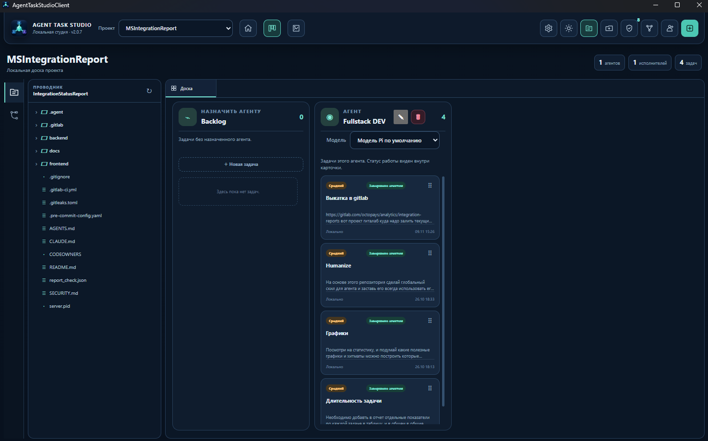
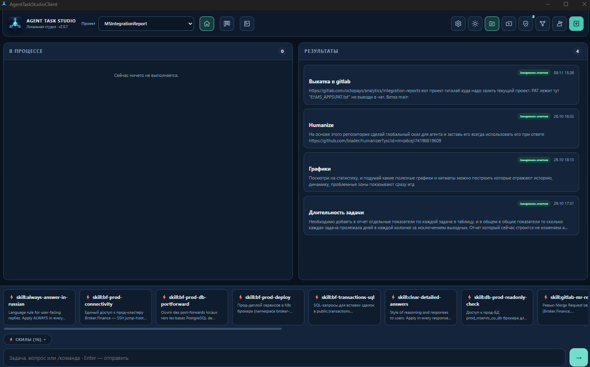
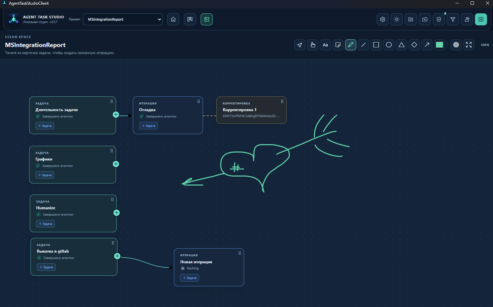
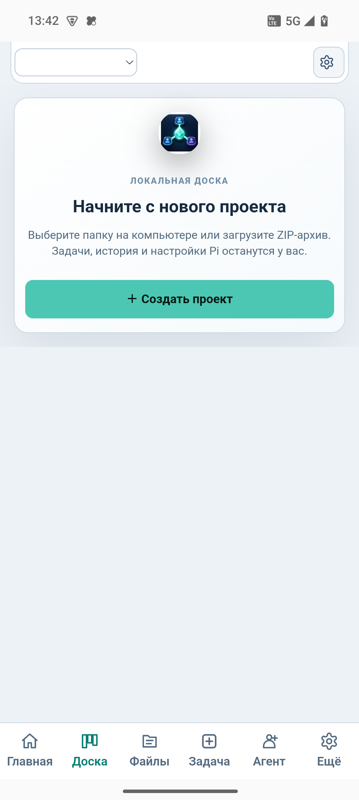

Agent Task Studio — настольная студия, где доска задач, итерации и чат с агентом работают вместе. Агент выполняет, вы контролируете каждый шаг. Данные остаются на вашем компьютере.
Бесплатно для локального использования · Установка за минуту
ATS соединяет классический таск-трекер с исполняющим AI-агентом: задачи превращаются в итерации, итерации — в результат, а безопасность проверяется на каждом шаге.
Канбан-доска с колонками, агентами и статусами. Каждая задача разбирается на итерации с проверяемым результатом.
Несколько параллельных чатов с агентом по проекту, переключение во время генерации, полный контекст сессии.
Локальные ML-модели (ONNX) проверяют промпты и ответы: защита от инъекций, утечек PII и опасных команд.
Расширяем агента своими сценариями: скиллы проекта и глобальные навыки доступны агенту и в один клик из интерфейса.
Доска рисования для схем: фигуры, связи, стикеры, маркер — и передача схемы прямо в задачу.
Android-приложение синхронизирует доску и результаты: задачи под контролем даже вне рабочего места.
Укажите папку на компьютере — ATS работает с вашими файлами локально, ничего не отправляя в облако без вашего решения.
Опишите задачу на доске и назначьте агента. Задача превратится в итерации с понятными шагами.
Следите за работой агента в чате в реальном времени, сверяйте результаты итераций и принимайте готовое.
Реальные экраны Agent Task Studio: панель проекта, доска задач и визуальное пространство Clear Space.



Мобильное приложение Agent Task Studio держит проекты, задачи и результаты в кармане — а настольная версия делает тяжёлую работу с агентом.

Версия 2.0.8 · Windows 10/11 x64 · установщик ~355 МБ (агент и модели включены)
⬇ Скачать установщик